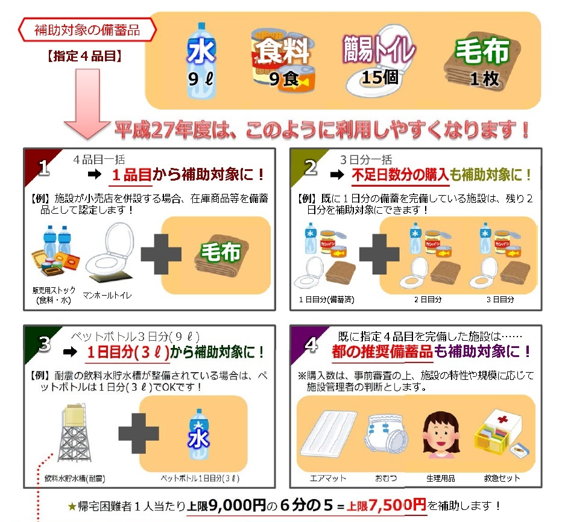

2024/01/11都道府県防災情報一覧更新のお知らせ（東京都）
都道府県防災情報一覧の「東京都」を更新しました。
2021/04/01震度ハザードステーションへのリンクはこちらです。
地震ハザードステーションJ-SHISは、地震防災に資することを目的として、日本全国の「地震ハザードの共通情報基盤」として活用されることを目指してつくられたWebサービスです。
2021/04/01「全国地震動予測地図」の２０２０年版が公表されました。
２０１９年２月に「日本海溝沿いの地震活動の長期評価」、２０２０年１月に「南海トラフ沿いで発生する大地震の確率論的津波評価」が公表されたことから、地震調査研究推進本部地震調査委員会はこの間に得られた新たな知見に基づいて全国地震動予測地図を更新し、この度「全国地震動予測地図２０２０年版」として公表されました。
詳細はこちらをご覧ください。
2018/06/26「全国地震動予測地図」の２０１８年版が公表されました。
政府の地震調査委員会は26日、今後３０年間に震度６弱以上の揺れに見舞われる確率を示した「全国地震動予測地図」の2018年版を公表しました。
北海道では、千島海溝沿いで発生するプレート間巨大地震を新たに評価したことにより、北海道東部の太平洋側で2017年版よりも大きく確率が上昇しました。
詳細はこちらをご覧ください。
出典：「全国地震動予測地図2018年版」（地震調査研究推進本部） （https://www.jishin.go.jp/evaluation/seismic_hazard_map/shm_report/shm_report_2018/）
（平成30年6月26日に利用）
2018/05/16都道府県防災情報一覧のお知らせ
サイドメニューよりご覧ください。
2018/03/26東京消防庁 家具転倒防止PV公開のお知らせ
東京消防庁の家具転倒対策PVが公開されました。
マンションの高層階で起こりうる地震への被害がリアルに描かれています。
是非、ご覧ください。
東京消防庁ホームページ 家具転倒対策ライブラリー
http://www.tfd.metro.tokyo.jp/hp-bousaika/kaguten/kaguten_video.html
2018/02/19東京都防災アプリが3月1日より配信されます！
東京都は、都民の一層の災害への備えを促進することを目的として、「東京都防災アプリ」を作成しました。
「あそぶ」「まなぶ」「つかう」をコンセプトに、楽しみながら防災の基礎知識を得られたり、災害時に役立つコンテンツを搭載しています。
①東京防災、②東京くらし防災、③災害時の3つのモードで＜知る・備える・役立つ＞アプリです。
3月1日よりダウンロード可能です。「東京防災」「東京くらし防災」の冊子もアプリで閲覧できます。
ぜひダウンロードして利用してください。
東京都公式アプリ「東京都防災アプリ」チラシ閲覧はこちら
http://www.metro.tokyo.jp/tosei/hodohappyo/press/2018/02/16/documents/06_01.pdf
2018/02/19女性視点の防災ブック「東京くらし防災」が3月1日に発行されます！
東京都は、女性の防災への参画を促すとともに、都民の一層きめ細やかな災害への備えを促進することを目的として、女性の視点から防災ブック「東京くらし防災」を作成しました。
都民が自然体で、日常生活の中で、無理なく取り組める防災対策や、避難所における授乳や防犯対策などの被災生活の様々な課題への対処法を掲載しています。
初版は100万部発行され、3月1日より東京都立・区市町村立施設や民間事業者等の都内店舗事業所9,000か所程度に設置される予定です。
詳細は東京都防災ホームページでご確認ください。
2017/11/29国土交通省ハザードマップポータルサイトがオープン
あなたの町や調べたい地域のハザードマップを地図や住所で検索できるポータルサイトがオープンしました。
国土交通省ハザードマップポータルサイト
●重ねるハザードマップ
浸水想定区域や道路情報、危険箇所などを地図や写真に重ねてシームレスに閲覧できます。
●わがまちハザードマップ
各市町村が作成したハザードマップへリンクします。地域ごとの様々な種類のハザードマップを閲覧できます。
2017/05/18東京都民間一時滞在施設備蓄品購入費用補助事業の募集が始まりました。
東京都は、首都直下地震等から帰宅困難者を守り、被害を最小化させるため、都内の区市町村と帰宅困難者受入協定を締結する民間一時滞在施設に対し、帰宅困難者向けの備蓄品を購入する際に、購入費用の6分の5を補助する事業を行っています。
1 交付対象者（下記（1）～（3）全ての要件を満たすもの）
（1）東京都内の区市町村との間で、帰宅困難者受入協定を締結
（2）従業者向けの備蓄（3日分）を完備
（3）事業継続計画（BCP）又は防災計画を策定
2 補助対象備蓄品
（1）東京都が指定する備蓄品（累計3日分に達するまで）
・水 1人当たり1日3リットル
・食料 1人当たり1日3食
・簡易トイレ 1人当たり1日5個
・毛布又はブランケット 1人当たり1枚又は1個
（2）東京都が推奨する備蓄品（（1）を完備した場合のみ対象となります）
・マット（シート・寝袋・付属品含む） 1人当たり1枚
・おむつ・生理用品・救急セット⇒都と協議の上数量を決定します
3 補助金額
補助対象備蓄品の購入費用の6分の5を補助します。
4 補助対象経費の上限額
（1）帰宅困難者1人につき累計3日分に達するまでの数量 かつ
（2）帰宅困難者1人につき上限9千円までの金額（補助金は7.5千円）
を補助対象経費の上限とします。
5 留意事項
・原則として、2（1）の指定備蓄品目4種類を完備するものとします。
・ただし、指定備蓄品目の一部を既に備蓄している場合は、不足分の購入のみの場合についても、補助対象とします。
6.募集期間
平成29年5月15日（月曜日）から平成30年2月28日（水曜日）まで
【参照】
◆東京都防災ホームページ
http://www.metro.tokyo.jp/tosei/hodohappyo/press/2017/05/12/09_01.html
昨年度からの変更点をご確認ください。
2016/09/01東京都民間一時滞在施設備蓄品購入費用補助事業の募集期限は11月30日です。
東京都は、首都直下地震等から帰宅困難者を守り、被害を最小化させるため、都内の区市町村と帰宅困難者受入協定を締結する民間一時滞在施設に対し、帰宅困難者向けの備蓄品を購入する際に、購入費用の6分の5を補助する事業を行っています。
1 交付対象者（下記（1）～（3）全ての要件を満たすもの）
（1）東京都内の区市町村との間で、帰宅困難者受入協定を締結
（2）従業者向けの備蓄（3日分）を完備
（3）事業継続計画（BCP）又は防災計画を策定
2 補助対象備蓄品
（1）東京都が指定する備蓄品（累計3日分に達するまで）
・水 1人当たり1日3リットル
・食料 1人当たり1日3食
・簡易トイレ 1人当たり1日5個
・毛布又はブランケット 1人当たり1枚又は1個
（2）東京都が推奨する備蓄品（（1）を完備した場合のみ対象となります）
・エアマット 1人当たり1枚
・おむつ・生理用品・救急セット⇒都と協議の上数量を決定します
3 補助金額
補助対象備蓄品の購入費用の6分の5を補助します。
4 補助対象経費の上限額
（1）帰宅困難者1人につき累計3日分に達するまでの数量 かつ
（2）帰宅困難者1人につき上限9千円までの金額（補助金は7.5千円）
を補助対象経費の上限とします。
5 留意事項
・原則として、2（1）の指定備蓄品目4種類を完備するものとします。
・ただし、指定備蓄品目の一部を既に備蓄している場合は、不足分の購入のみの場合についても、補助対象とします。
6.募集期間
6月1日（水曜日）から11月30日（水曜日）まで
【参照】
◆東京都防災ホームページ
http://www.bousai.metro.tokyo.jp/kitaku_portal/1000046/1003352.html
◆パンフレットはこちらです。
2015/08/04東京都民間一時滞在施設備蓄品購入費用補助事業の募集期限は11月30日です。
1）区市町村と帰宅困難者受入協定を締結
2）従業員用の3日間の備蓄を完備
3）事業継続計画（BCP）を策定
1日当たり、水（3ℓ）、
食料（3食）、
簡易トイレ（5個）、
毛布又はブランケット（3日で1枚） を原則3日分

【参照】
◆東京都防災ホームページ
http://www.bousai.metro.tokyo.jp/bousai/1000019/1001121/1001180.html
◆パンフレットはこちらです。
2015/01/17福祉避難所をご存知ですか？
福祉避難所とは、既存の建物を活用し、介護の必要な高齢者や障害者など一般の避難所では生活に支障を来す人に対して、
ケアが行われるほか、要援護者に配慮したポータブルトイレ、手すりや仮設スロープなどバリアフリー化が図られた避難所
のことを言います。（厚生労働省ホームページより）
【参照】厚生労働省ＨＰ
http://www.mhlw.go.jp/bunya/seikatsuhogo/saigaikyujo7.html
高齢者、障害者、妊産婦、乳幼児、病弱者等が対象となります。
福祉避難所の指定率には地域によってバラつきがあるので、お住いの地域の指定状況を予めご確認下さい。
ＪＥＣＯＭ株式会社 業務担当のブログ
http://bizmail.itp.ne.jp/blg/jecomgyoumu/24986
■埼玉県内の福祉避難所リンク一覧（1）市編①
http://bizmail.itp.ne.jp/blg/jecomgyoumu/29644
■埼玉県内の福祉避難所リンク一覧（1）市編②
http://bizmail.itp.ne.jp/blg/jecomgyoumu/30627
■埼玉県内の福祉避難所リンク一覧（2）町村編
http://bizmail.itp.ne.jp/blg/jecomgyoumu/31289
2015/01/17避難行動要支援者登録制度（災害時要援護者避難登録制度）をご存知ですか？
避難行動要支援者登録制度とは、災害時に自力で避難することが困難な方（避難行動要支援者）が事前に登録をし、その個人情報を行政・警察・消防・民生委員・自主防災組織等で共有し、いざというときの安否確認や避難の手助け等を地域ぐるみで適切に支援することに活用して、少しでも災害時の被害を少なくしようという『地域ぐるみの助け合い(共助)』の制度です。
対象となる方は、自治体によって異なりますが、大まかに次のような方が挙げられます。
・高齢者のみの世帯
・障がい者（身体・知的・精神）
・要介護者
・療育手帳の交付を受けている者
・その他支援が必要とされる者
詳しくは、お住まいの自治体のホームページをご確認下さい。
ＪＥＣＯＭ株式会社業務担当のブログ
http://bizmail.itp.ne.jp/blg/jecomgyoumu/25247
2014/09/03東京都民間一時滞在施設備蓄品購入費用補助事業の募集期限は9月30日です。
帰宅困難者対策を推進することを目的として、東京都では地方公共団体と帰宅困難者受入協定を締結する一時滞在施設（民間事業者）に対し、防災備蓄品の購入に係る費用の6分の5の補助（上限7,500円/人）を行っています。
募集期間は今月末までです。
詳しくは、東京都防災ホームページをご覧下さい。
http://www.bousai.metro.tokyo.jp/bousai/1000019/1001121/1001180.html
備蓄品の選定に関するお問い合わせもお待ちしております。
2014/08/25９月１日は「防災の日」です。
９月１日は「防災の日」です。
気象庁によると、震度５弱以上で家具の移動が、震度７では家具が飛ぶことも予想されています。
震度７を記録した阪神・淡路大震災では、亡くなった方の７７％が家具転倒や家屋の倒壊による圧死というデータがございます。
また、家具の転倒は、火災や津波などから避難する際の妨げの原因にもなりかねません。
防災月間に「室内の安全対策」を見直してみてはいかがでしょうか。